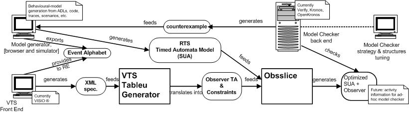

VTS
is a notation for expressing real-time requirements in a visual and friendly,
yet powerful, language, by means of negative scenarios. A
VTS scenario is
basically an annotated partial order of relevant events, denoting a (possibly
infinite) set of matching time-stamped executions.
VTS is meant to
existentially predicate on system executions. That is, it is used to state a
simple though relevant family of questions of the form ``Is there a potential
run that matches this generic scenario?''. When interpreted as negative
scenarios, these questions can express infringements of safety or progress
requirements. They turn out to be decidable, and we provide tool support for
visually editing and model checking scenarios over timed automata (TAs) models
of the system under analysis (SUA). The tool translates a scenario into a TA (observer)
that recognizes matching runs. This automaton is composed with the SUA to check
whether a violating execution is reachable in that behavioral model. This last
step constitutes a common practice in the verification of concurrent systems:
safety and liveness requirements are usually expressed by verification engineers
as virtual components (observers) and composed in parallel with the set of
components to be verified.
On the other hand, ObsSlice is an optimization tool
suited for the verification of networks of timed automata using virtual
observers. It automatically discovers the set of modeling elements that can be
safely ignored at each location of the observer by synthesizing behavioral
dependence information among components. ObsSlice is
fed with a network of timed automata and generates a transformed network which
is equivalent to the one provided, up to branching-time observation. Preliminary
results have proven that eliminating irrelevant activity mitigates state space
explosion and has a positive --and sometimes dramatic-- impact on the
performance of verification tools in terms of time, size and counterexample
length.
We provide some empirical evidence of the benefits obtained from using a slicing technique in a setting where negative event-based scenarios predicate on models comprising several concurrent timed activities. We show how tools as the one consisting of VTS combined with ObsSlice offer verification engineers' a novel strategy for their intervention (beyond configuring search options, changing data representations, applying built-in abstractions, or even manipulating the model) when model checking engines face resource-consuming verification goals. More precisely, scenarios posed during the specification phase can be specialized in order to get the most out of slicing technology and thus considerably reduce the verification effort required from the model checker. The underlying philosophy is that by making more precise guesses about generic negative scenarios, chances for the slicer to optimize the model can be improved. Thus VTS and ObsSlice together constitute a tool set that not only enables the natural description of complex properties but also provides new (visual) means to tune model checkers.
|
 |
Conveyor Chain:a pipeline of communicating stages (single-slot active queues that push and pop objects from and to neighboring stages) where objects are fed at one end and consumed at the other, according to a FIFO policy
Mine Pump:a design of a fault-detection mechanism for a distributed mine-drainage controller
Remote Sensing:a system basically consisting of a central component and two remote sensors